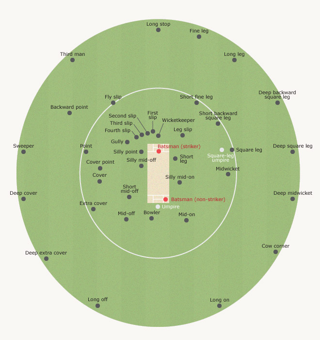

Cricket field is oval or circular shaped with grassy surface. A field consists of pitch, grass surface and boundary rope.
In the middle of ground, a cricket pitch is a rectangular area of 20.12 m x 3.05 m with no or very little grass on it. It is the main part of the ground where bowler delivers a ball from one end and batsmen try to hit it from other end. Two sets of wickets are a the opposite ends of pitch. There are two lines painted with white paint across the wickets at either end, they are called creases.
The bowling crease is a straight line across the width of the pitch that passes through the three stumps, and there's one at each end of the pitch. Likewise, the popping crease at either end is 4 feet (1.22 m) in front of the bowling crease, to which it runs parallel. The bowler's foot has to be grounded behind the popping crease when he bowls, and the batsman must have some part of his bat or body grounded behind the popping crease to be safe from being run out or stumped. Finally, there are two return creases at each end, each 4 ft 4 in (1.32 m) from the centre of the pitch. They run at right angles to the bowling and popping creases, and like the popping crease, the bowler must have some part of his back foot grounded within them to bowl a legal delivery.
Flood lights are also used in cricket stadium for day-night matches.
Cricket match is played between two teams. Each team has 11 players but usually 16 players are selected for match to make sure team has playing eleven if somebody got injured. A substitute player however cannot bat or bowl but he can field.
Every team has a captain and vice-captain (acts as a captain when main captain is not on field) who make decisions about playing eleven members for each match, when a particular batsmen is going to bat, bowler rotation and position of fielders on field. Other players include wicket-keeper, bowlers, batsmen and all-rounders (players who have both batting and bowling skills). Bowlers can be a mixture of spinners, medium and fast bowlers.
Following is the table of top international teams and their captains in different formats.
| Team | Captains in various formats |
|---|---|
| Australia | Steven Smith |
| India | MS Dhoni (ODI, T20), Virat Kohli (Test Cricket) |
| New Zealand | Brendon McCullum |
| England | Alastair Cook, Eoin Morgan |
| Sri Lanka | Angelo Mathews |
| Pakistan | Azhar Ali (ODI), Misbah-ul-haq (Test), Shahid Afridi (T20 Cricket) |
| West-Indies | Jason Holder (ODI), Denesh Ramdin (Test Cricket), Darren Sammy (T20 Cricket) |
Match officials include Umpires and Match-referee.
Umpires are match officials who have right to make decisions and judgements in cricket match. He may give decisions on legality of a ball delivered by bowler i.e. No ball or wide ball, he may give the batsmen out and he can also reject the appeal by bowler's team if the batsman was not out by any legal way.
There are always two umpires on fields, one stands at bowler's end of pitch before wickets and other umpire stands at striker's end ( a position parallel to striking batsman but most likely 22 yards away on leg side). Striker's end umpire gives decision about stump out and run out.
Third umpire sometimes called TV umpire doesn't stand on field. If field umpires are unsure of something e.g. Run-outs, stump-out, a catch etc. They can call third umpire to check replay recorded by cameras and give decision based on that.
Decisions are often conveyed by signals. Some of the most popular signals are described below
To make sure fair play rules and code of conduct if followed in matched, referee is appointed by International Cricket Council in all international matches. Match referee doesn't stand in field and doesn't make decisions which may effect the outcome of the match. Instead he give penalty to players for a fight in match, or arguing with the umpires or things like slow over rate etc.
The match is played between two teams. It starts with a toss. Captain of one team flips the coin in air and captain of other team call the side. Winning captain gets to decide whether he wants to bat first or field first.
After toss, batting team sends two batsmen to bat called openers. Total length of the match depends on format of cricket. Balls are bowled by bowlers from fielding team in overs (1 over contains 6 balls).
A bowler starts his run up behind the wicket opposite to striking batsman and then he delivers the ball and striker attempts to hit the ball in order to score runs. If ball touches or crosses the boundary rope without hitting the ground then six runs are added in total. If ball touches the ground and crosses the rope then four runs are added to score. If none of the above scenarios happen, then striker and non striker batsman runs to opposite ends and they keep running unless fielder throws the ball to wickets. The number of times they run, same number of runs are added in total score. A batsman can get out if he fails to reach the crease before ball hits the stumps.
A striker could miss the ball and ball may hit the wickets, then the batsmen would be given out providing the ball was a legal delivery.
No run is added to total if batsman leaves the ball to wicket-keeper provided ball was a legal delivery
One innings are complete when all the players get out or overs gets completed. Score made by the team in first innings becomes target for other team. If other team scores more than the first team that team is considered as winners and other team loses the match, if not team a loses the match.
interesting video about cricket basics by HowcastSportsFitness
For right handed batsman his right side of ground is called leg side and the left side of ground is called off side.
The following diagram show all the field positions in cricket.
Captain can only fill 10 positions on the field at one time. He takes this decision by consulting with bowler and keeping in mind the match situation. However there are some restrictions as well. For example - in powerplay (mandatory fifteen overs in ODI and six overs in T20), he can only place three fielder outside 30 yard circle and only five fielders on leg side.